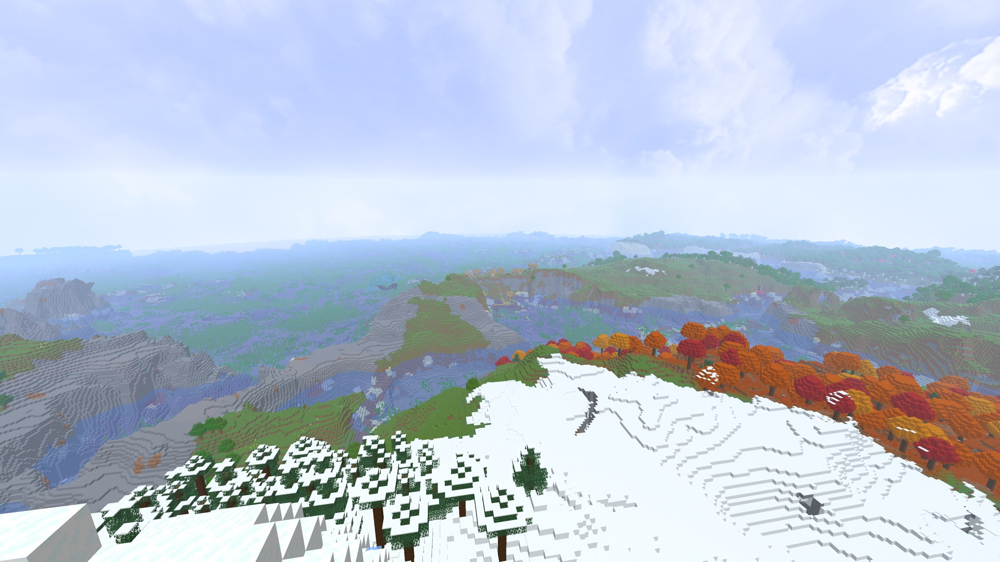
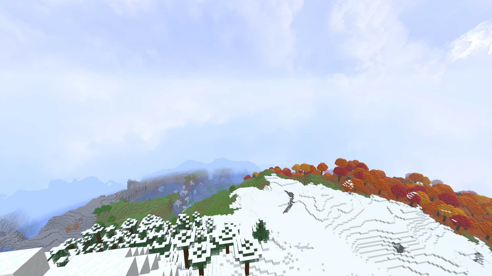
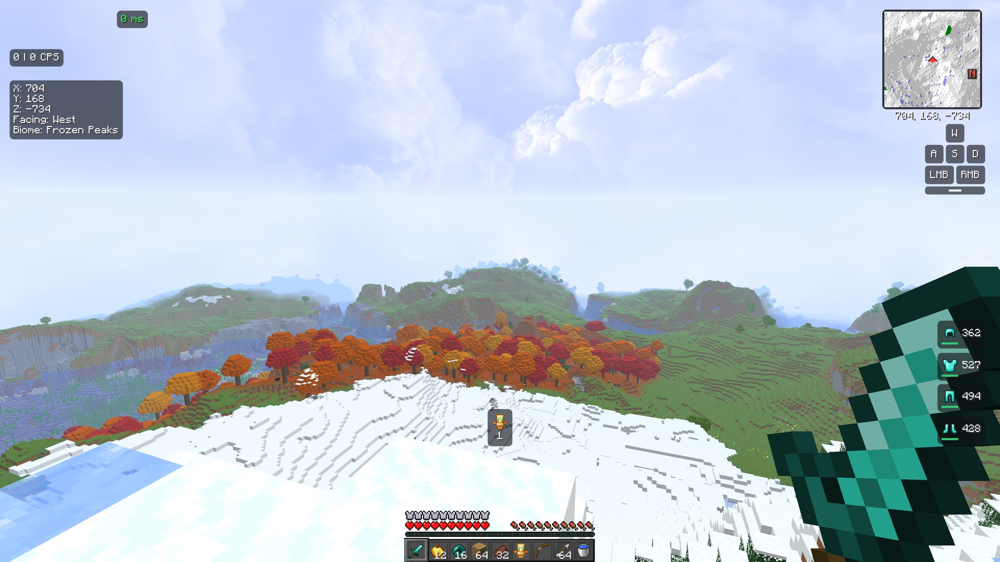
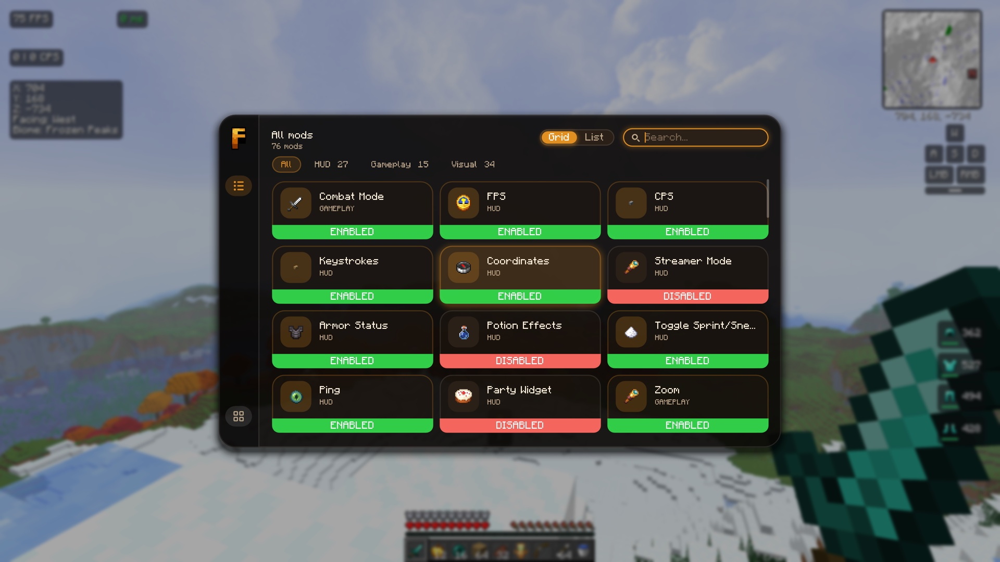
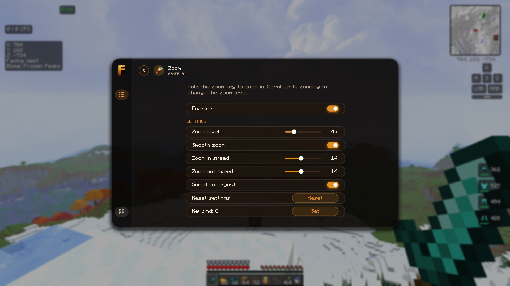
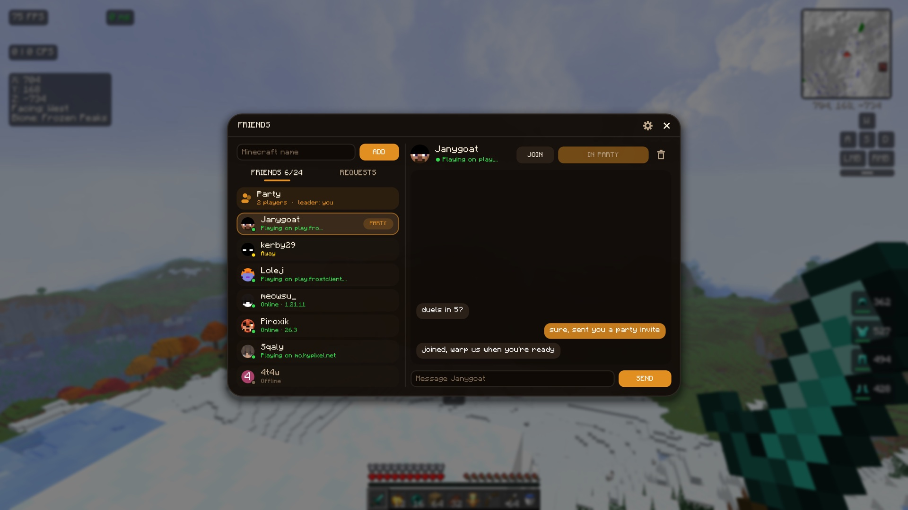

5s
From Play to the menu.
FrostClient Rust starts in under five seconds. There is no Java to boot, no mod loader and no hundreds of jars to scan before you see the menu.
Java versionJVM start, Fabric and every mod loading first
Out now · Free for everyone
Frost, rebuilt as native code. No Java underneath, no stutter in the middle of a fight.
Free for everyone. Download the Frost Launcher and pick FrostClient Rust from the version list.
Rust vs Java
The same Frost mods and HUD, without the Java virtual machine underneath. That changes more than the frame counter.
5s
FrostClient Rust starts in under five seconds. There is no Java to boot, no mod loader and no hundreds of jars to scan before you see the menu.
Java versionJVM start, Fabric and every mod loading first
5s
World generation is native code on every core, so creating a world and stepping into it takes about as long as opening the game.
Java versionWaiting on the world generation screen
Chunks are built in parallel and drawn in large batches, so you see further for fewer frames than the same distance costs on Java.
Java pauses to clean up memory, often mid-fight. Rust frees memory as it goes, so frame times stay flat.
No heap to reserve up front and no memory slider to guess. The game takes the memory it actually needs.
About 45 MB for the whole client. Java only prepares the vanilla files once; it never runs while you play.
Render distance
Same mountain, same moment. Drag the handle to compare 64 chunks on FrostClient Rust with the 16 chunks most Java players can afford.


Frames per second
Same PC for every bar: RTX 3060 Ti, Intel Core i7 (11th gen), 6 GB RAM.




FrostClient Rust is out now and costs nothing. Download the Frost Launcher, sign in and pick FrostClient Rust from the version list.